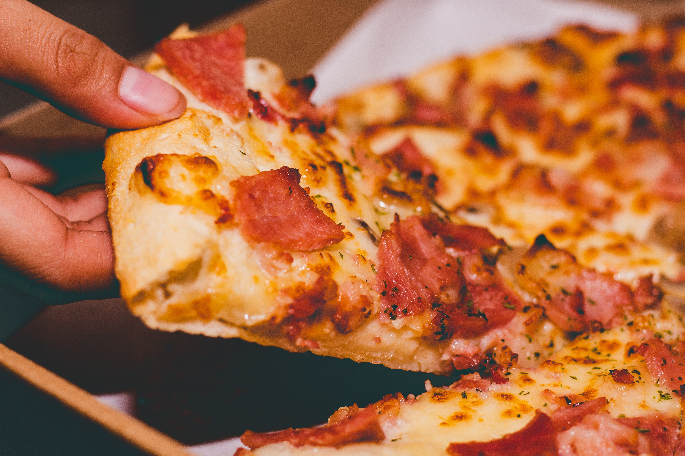

Pizza Meny

| Vårt utvalg | Bilde | koPris | Topping | Allergener |
|---|---|---|---|---|
| Pepperoni | 200kr | Pepperoni | Hvete og melk | |
| Kebabpizza | 220kr | Kebabkjøtt, dressing og pommes frites | Hvete, melk og egg | |
| Skinke&Ost |  | 195kr | Skinke og ost | Hvete og melk |
| Krabbepizza | 199kr | Krabbesticks og reker | Hvete, melk og skalldyr | |
| SpicyGreen(vegetarisk) | 220kr | rød chilli og jalapenos | Hvete og melk | |
| GoGreen(vegetarisk) | 220kr | Paprika, agurk og sopp | Hvete og melk | |
| Vegan(Vegansk) | |
250kr | Sopp, paprika og chilli | Hvete, soya |
Stor kebabpizza + stor drikke for 240kr
Besøk vår resturant i hjertet av Oslo sentrum!
Siden PizzaTown ble grunnlagt en vakker sommerdag 1969 i Storgata har vi vært opptatt av å lage hovedstatens beste pizza. Vi i PizzaTown legger vekt på god kvalitet og bruker kun de beste råverene, for en perfekt smak.